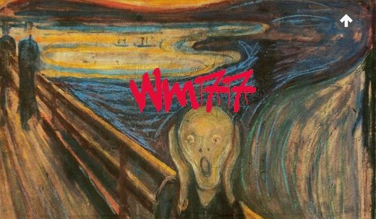

<!DOCTYPE html>
<html>
<head>
<title>Page Title</title>
 <link rel="stylesheet" href="https://cdnjs.cloudflare.com/ajax/libs/materialize/0.97.5/css/materialize.min.css">
 	<link rel="stylesheet" type="text/css" media="screen" href="css/captions.css"/>

 <script src="https://code.jquery.com/jquery-2.2.2.min.js"   integrity="sha256-36cp2Co+/62rEAAYHLmRCPIych47CvdM+uTBJwSzWjI="   crossorigin="anonymous"></script>
 <script src="https://cdnjs.cloudflare.com/ajax/libs/materialize/0.97.5/js/materialize.min.js"></script>
 <script src="index.js"></script>
</head>
<body>


 <!-- this is a comment -->

 <video controls autobuffer id="videoTest" width="1010" height="464" style="width: 100%; height: auto !important;">
   <source src="video/arduino.m4v" type="video/mp4" />
   <source src="video/arduino.webm" type="video/webm" />
   <source src="video/arduino.ogv" type="video/ogg" />

   <!-- Subtitles for this video -->
   <track kind="subtitles" src="video/arduino-en.vtt" type="text/vtt" srclang="en" label="English Subtitles" default />
   <track kind="subtitles" src="video/arduino-de.vtt" type="text/vtt" srclang="de" label="German Subtitles" />
   <track kind="subtitles" src="video/arduino-ja.vtt" type="text/vtt" srclang="ja" label="Japanese Subtitles" />

   <!-- TTML Example (not for this video) -->
   <!-- I haven't included this file in the repo because it's not publically licenced. Before I do a proper release I'll find a CC / FOSS TTML file. -->
   <track kind="subtitles" src="video/ttml-govt.xml" type="application/ttml+xml" srclang="en" label="TTML Example" />

   <!-- LRC Example (not for this video) -->
   <!-- Adapted from: http://www.stepmania.com/wiki/Song_Lyrics_-_LRC_Format -->
   <track kind="descriptions" src="video/example.lrc" type="text/lrc" srclang="en" label="LRC Example" default />

   <!-- WebVTT Testing & Examples -->
   <track kind="captions" src="video/acid.vtt" type="text/vtt" srclang="en" label="WebVTT Acid Test" />
   <track kind="captions" src="video/example.vtt" type="text/vtt" srclang="en" label="WHATWG's WebVTT Example"  />
 </video>

 <script type="text/javascript" src="js/captionator.js"></script>

  <!-- Example Usage -->
  <script type="text/javascript" src="js/captionator-example-api.js"></script>
  <script type="text/javascript">
    window.addEventListener("load",function() {
      captionator.captionify(null,null,{
        debugMode: !!window.location.search.match(/debug/i),
        sizeCuesByTextBoundingBox: !!window.location.search.match(/boundingBox/i),
        enableHighResolution: !!window.location.search.match(/highres/i),
      });

      var videoObject = document.getElementsByTagName("video")[0];
      videoObject.volume = 0;
      document.body.appendChild(generateMediaControls(videoObject));
    },false);
  </script>

<!--
  <div class="row">
         <div class="col s12 m7">
           <div class="card">
             <div class="card-image">
               
               <span class="card-title">Count <span id="count"></span</span>
             </div>
             <div class="card-content">
               <p>I am a very simple card. I am good at containing small bits of stuff.
               I am convenient because I require little markup to use effectively.</p>
             </div>
             <div class="card-action">

                  <a href="https://ifttt.com/">IFTTT</a>
               <a href="http://materializecss.com/">Material Components</a>
               <a href="http://thestocks.im/">Stock Images</a>
               <a href="https://github.com/agermanidis/autosub">Generate the Caption Track</a>
               <a href="http://captionatorjs.com/demo.html">Overlay Caption Track on Video</a>
             </div>
           </div>
         </div>
       </div> -->


</body>
</html>
